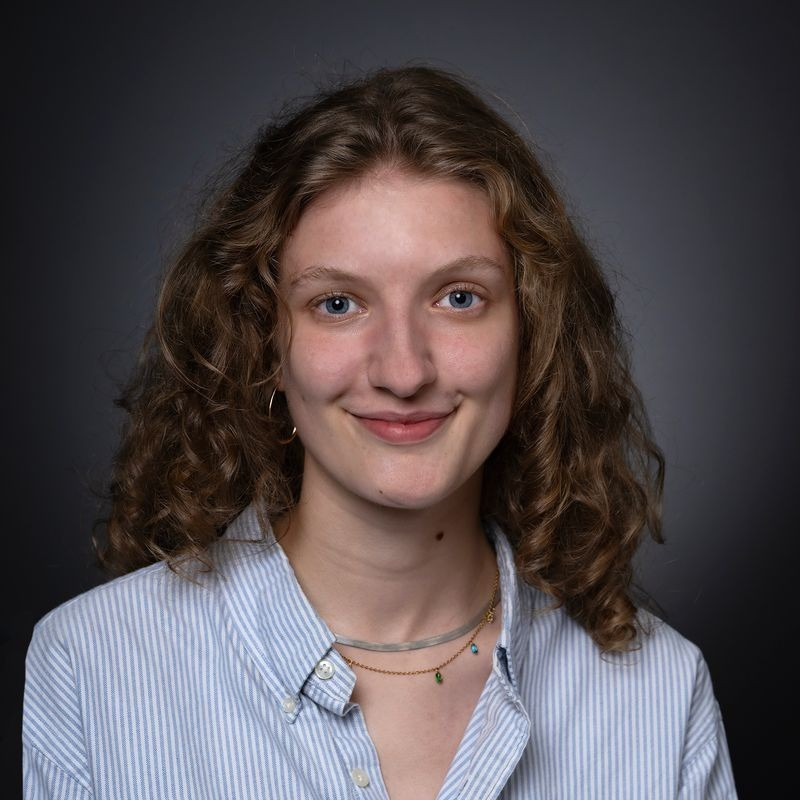
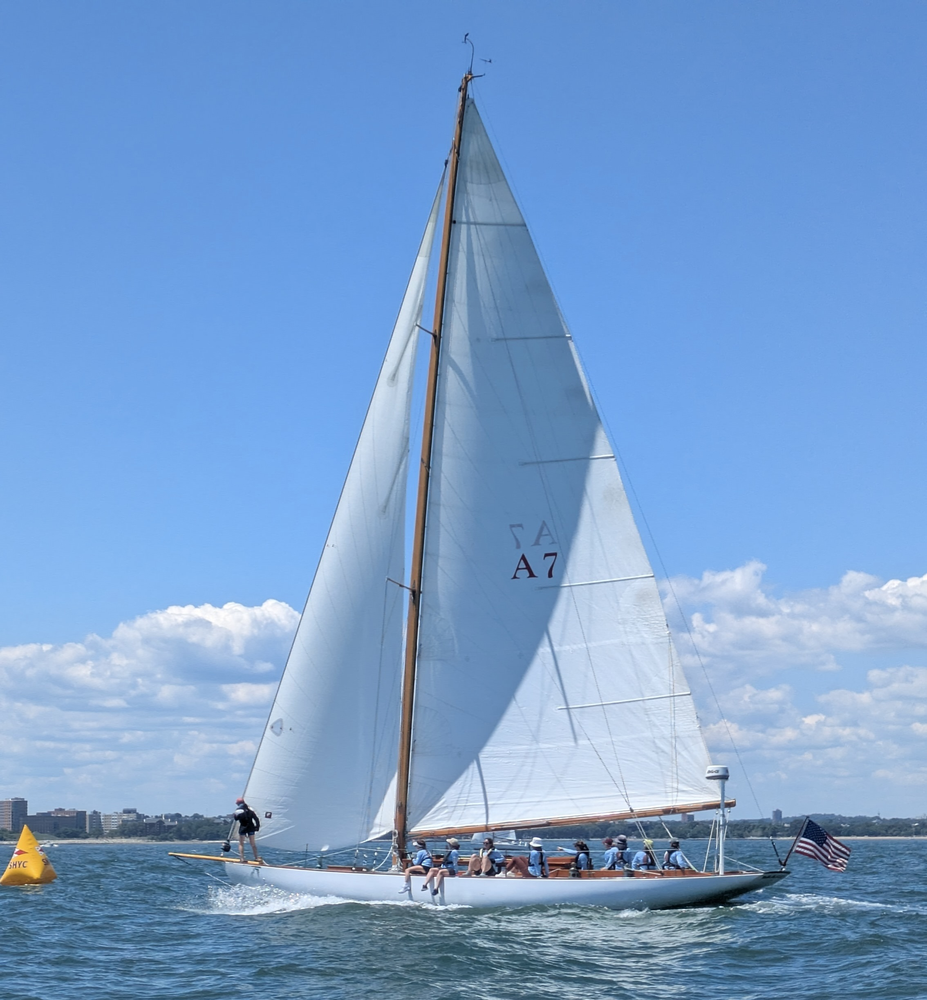
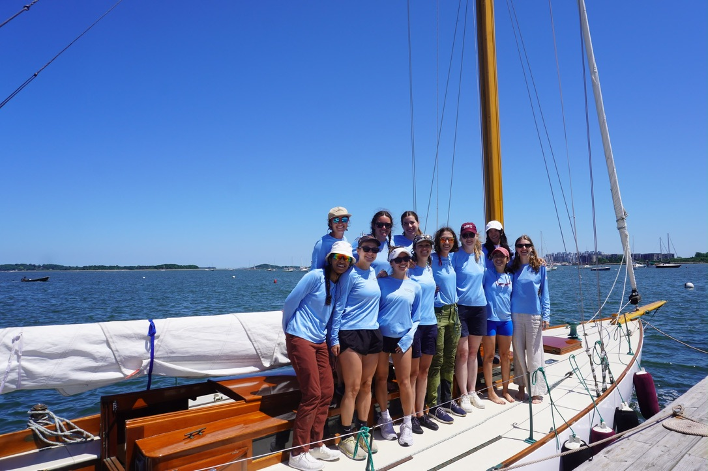
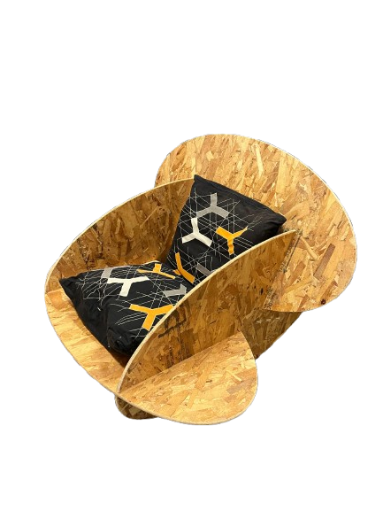
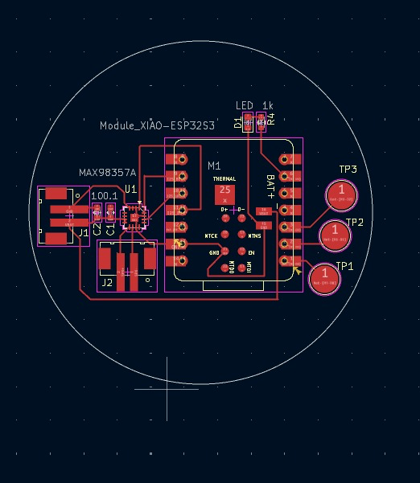
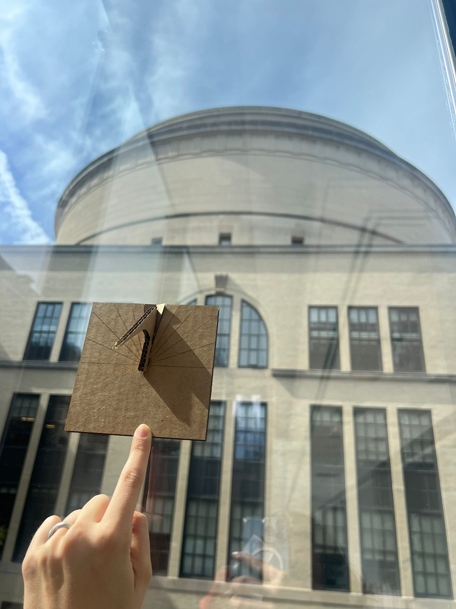
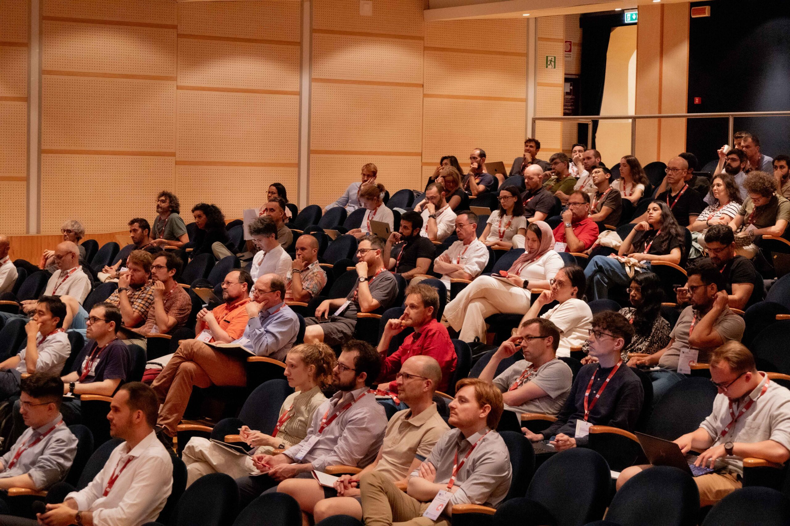
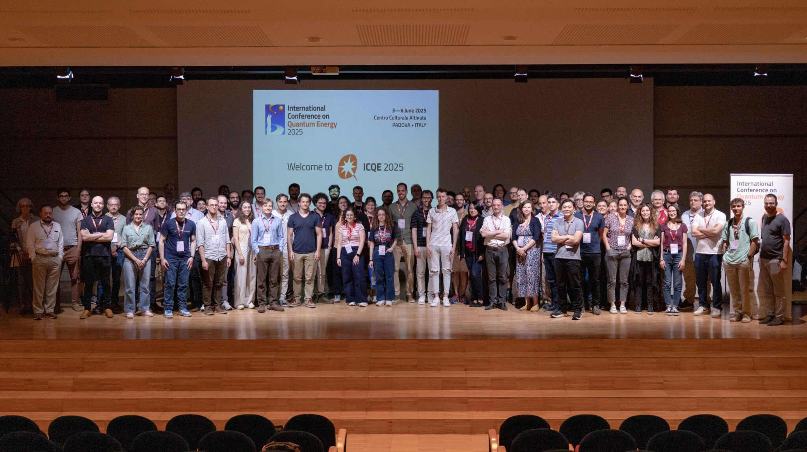

I’ll be attending the World Quantum Cannes Festival !

Carlotta Barone-MacDonald
Hi there!
I’m a graduate student at MIT pursuing a dual degree in Electrical Engineering & Computer Science and Technology & Policy, following a bachelor's degree in mathematics and physics from École Polytechnique.
My work is guided by a central question: What will it take for quantum computation to become a useful tool for understanding nature? I explore this question through quantum information and simulation, computational and experimental research, and the study of how emerging scientific fields develop.
Learn more about me, explore my work below, read my CV, or get in touch!
Want to explore my research interests?
Select an electron in the atom below to learn more.
How can quantum computation help us understand nature?
Recent updates
Lately...
2026
Building team to complete global quantum challenge 2026! Reach out if that sounds like a fun project to work on together!
Ladies Challenger and her all-women team won CYC Regatta’s Spring Series Championship!


Had a blast attending Quantum.Tech World in Boston!
Joined UCLA Quantum Device Workshop sessions on superconducting qubit design, simulation, and device-level constraints.
Built an E91 quantum key distribution project in Quantum Engineering Platforms.
Taught introductory quantum mechanics in South Africa and Botswana, as a part of MIT's Global Teaching Labs.
2025
Took How to Make (Almost) Anything , exploring rapid prototyping, fabrication, and the design of (almost) any system.



Attended the International Conference on Quantum Energy in Padua.


Published an essay on quantum technologies and digital humanism in The Mobile Century.
Presented work from MIT’s ARPA-E project at the Energy Innovation Summit, focused on experimental tests of nuclear-anomaly claims in metal-hydrogen systems.
Helped organize MIT iQuHACK 2025 , MIT’s annual quantum hackathon.
2024
Started graduate study at MIT , combining technology and policy with technical work in quantum science, energy systems, and experimental platforms.
Organized the MIT Policy Hackathon with the Technology and Policy Program, helping coordinate a student-led event at the intersection of data, policy, and societal challenges.
Completed my bachelor’s thesis on quantum annealing and exciton diffusion, using quantum simulation to compare transport and optimization dynamics.
Joined MIT iQuHACK 2024 , exploring quantum computing through hands-on challenges and workshops.
Published an essay on digital technology, mentorship, and the next generation in The Mobile Century with the Global Telecom Women’s Network.
About
More about me
My path across physics, computation, experiments, and policy.